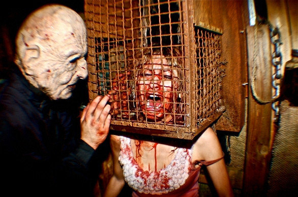
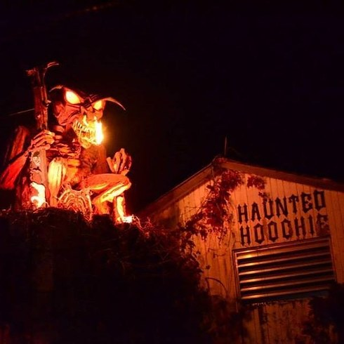
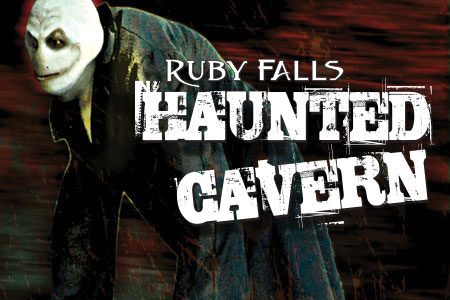
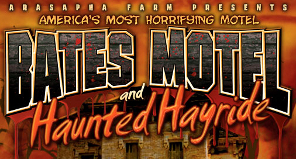
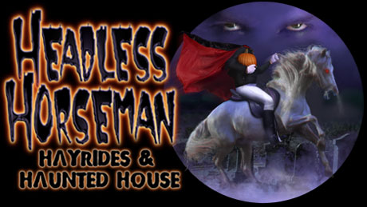
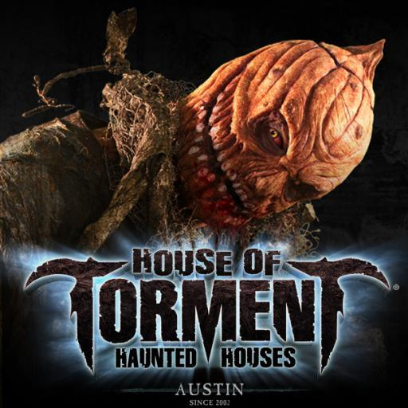

Everyone knows what it's like to feel really scared: A pounding heartbeat, faster breathing, nervous perspiration, and butterflies in the stomach. But whether that fright is caused by watching a nail-biting horror movie, listening to a spine-chilling story, or prowling through a dark-as-night haunted house on Halloween, some people actually revel in feeling frightened. Of course, for the mere mortals among us who feel that we're liable to lose our lunch after just a glimpse of a slasher movie, it may seem unimaginable that others actually enjoy panic-button experiences. But experts believe that it's not uncommon for individuals to push the envelope, seeing how much fear they can tolerate, and ultimately feeling a sense of satisfaction when they're able to endure the anxiety.
There's a long history of people being intensely curious about the 'dark side,' and trying to make sense of it. "Through movies, we're able to see horror in front of our eyes, and some people are extremely fascinated by it. They're interested in the unusual and the bizarre because they don't understand it and it's so different from our everyday lives."
The Haunted House is a time-honored horror setting. All of us have shivered our way through spooky flicks such as The Haunting, The Amityville Horror, The Sentinel and Poltergeist.
Scariest Haunted Houses in America
McKamey Manor, San Diego

Mckamey Manor is not your usual haunted house, instead of sighing at pop-up ghosts you can see fairground operators smoking a cigarette behind, you're bound, gagged, drenched in blood and terrorised for four to seven hours.
Claiming to be the world's most extreme haunted house, it grinds down guests through sheer terror, force feeding them, riding them, shouting in their faces, shutting them in small boxes and much, much more. All guests are required to sign a waiver before entering and are health checked to ensure they can ensure the stress of the ordeal.
Haunted Hoochie, Ohio

The Haunted Hoochie has been fracturing young hearts and minds for 20 years. Its origins are rooted fifty years into the past as one of the first haunted hayrides. This pioneering event in haunted history was produced by Dead Acres owner/operator, Frank Dixon, Tim May’s grandfather. Taking the torch of terror into the next generation, Tim evolved the family tradition of haunting from a hayride into a haunted trail known as the Haunted Hoochie, and then eventually relocated it in 2003 into an enormous self-contained indoor haunt, simultaneously expanding the business into a complete fully functional Halloween festival scream park, aptly named Dead Acres, for its rustically aged farm location. Complete with hayrides, bonfires, Halloween themed parties and events, the face grinding Haunted Hoochie, as well as the all new mind bending 3D experience called Bad Trip 3D, Dead Acres has emerged as a perfectly realized total Halloween phenomenon. Manufacturing murder and synthesizing sickness for over 50,000 fanatically loyal Hoochie Heads each year, this intimidating October event quickly accelerated to the top of the haunting world. Recognized nationally as one of the best, Haunted Hoochie is unquestionably the most-extreme haunted house attraction in the nation.
Dealing out death in spades, Haunted Hoochie has become an old dog ever learning new tricks in a tireless journey of constant hell raising fun. Throughout the years, a code of misconduct has mutated into a sick fascination with suffering. Their shift from traditional spooky scares into a slick style of pain-induced fear shook the core of customers and painted each night red with gallons of blood. Long before Hollywood started pumping out their brand of pain in the likes of Saw or Hostel with the term “Gorno” coined, the Hoochie had been traveling down that flesh paved road for a decade. Their downpour of death rained down on the public in the form of their legendary sadistic stage skits.
Ruby Falls Haunted Cavern, Tennessee

Claustrophobics beware! At Ruby Falls you will be chased by mutants over 200 feet underground in a haunted cave with only one way in and one way out. It’s basically the movie The Descent, but done as a haunted house.
Ruby Falls haunted house is located 26 stories into a cave, that alone is scarier than any haunted house. The attraction is not advertised as a family attraction, but Ruby Falls doesn’t set a minimum age and leaves the decision up to the parents.
The attraction opens at 8 but most arrive early to catch the “Freak Parade,” when the actors walk by to take their positions. There are chainsaws, creepy men in leather masks and creatures called “sliders” who glide over the asphalt in what must be metal kneepads, causing a terrifying grinding noise and sparks. But What sets the Haunted Cavern apart is the elaborate story line such as actors begging you nt to go to certain areas of the cave or asking you to take them with you.
The 13th Gate, Louisiana

widely regarded as one of the top haunted houses in the Country, The 13th Gate, located in Baton Rouge, Louisiana, is the Ultimate Haunted House. Journey through 13 nightmarish realms where your worst fears come true and anything can happen.
The 13th Gate is a haunted attraction that is know for it's extreme ultra-realism and is one of the most detailed haunted houses in existance. The artists behind the massive dark attraction are experts at blurring the lines between horror and reality, and guests frequently wonder between screams whether what they are experiencing is real or not. The Attraction’s level of detail, set design, and effects combined with their impressive actors and incredible makeup effects can only be compared to a Hollywood movie. The attraction features a real snake-infested Louisiana Swamp, nightly voodoo shows, claustrophobic cellars, hidden subterranean passages and even a prehistoric ice cave all seamlessly woven together and nothing short of masterful. The haunted house is constantly changing and growing from year to year so guests never know what to expect around the next terrifying corner, from crawling though a crematory oven and an old hearse to being lost in dark underground tunnels or even finding yourself standing on a rickety bridge overlooking hundreds of live snakes, this 40,000 square foot haunted house is definitely not recommended for the faint of heart.
The Bates Motel and Haunted Hayride, Pennsylvania

Don’t let the name fool you into thinking it’s some behind-the-scenes tour of one of America’s most iconic horror films. The experience starts with an interactive hayride through an insane asylum, and then you’re dropped off to explore the elaborate Bates Motel while facing the harassment of its inhabitants. Finally, you walk through the corn maze that’s filled with people ready to chase you, and wanting to kill you.
Headless Horseman, New York

The Headless Horseman attraction has been rated as the #1 haunted attraction in the United States by Haunt World Magazine, and listed as one of the "Top 20 Hometown Haunted Houses in America" by Fangoria.
ranging from a twisted reimagining of Alice in Wonderland to medical experiments gone wrong all outside on over 40 creepy, wooded acres in the middle of nowhere, making it with no doubt a favorite among seek thrillers.
House of Torment, Austin

In 2002, the original House of Torment was opened, and now the home haunt that got out of control has become one of the nation's leading providers of seasonal scares and festive frights. Since joining forces with the legendary 13th Floor out of Colorado, the evil empire has grown to eight sites in five cities in four states. There are Houses of Torment in Austin and Chicago; 13th Floor locations in Chicago, Denver, Phoenix, and San Antonio; plus Phoenix has the outdoor event Fear Farm, and Denver gets the Asylum.
Once you walk into the House of Torment, there is no safe haven. If you hide behind someone, a monster will fly above you, if you try to go to the bathroom, an actor will attack your port-a-potty. When November rolls around, they create a special attraction where you and your friends are put in a pitch black building and challenged to find your way out with just a single glow stick.